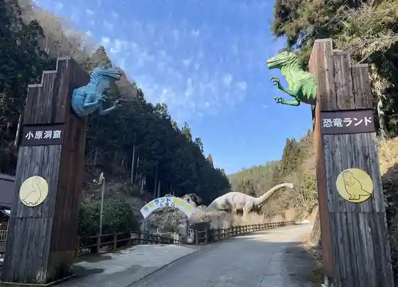
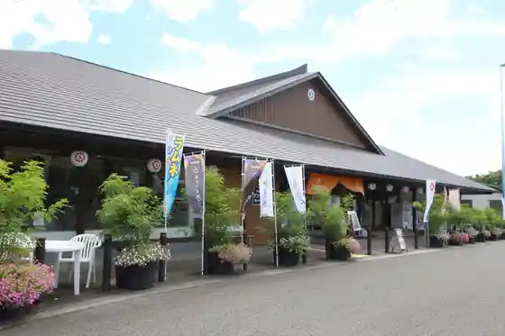
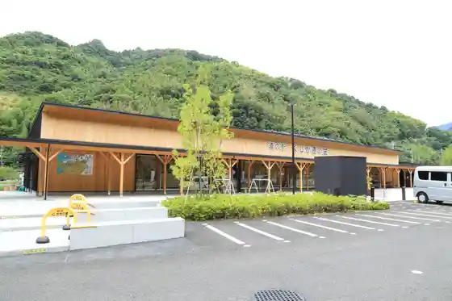
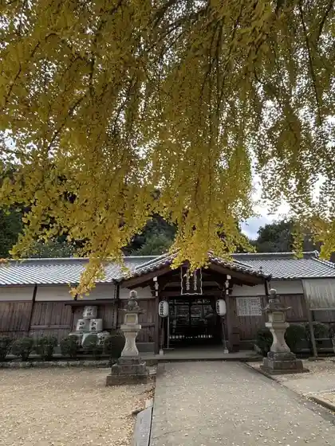

Kohara Dokutsu Kyoryu Land
Katsuragi, Wakayama · 0737-26-0836 · Official / source link

Roadside Station Katsuragi Nishi (Kudari Sen)
Katsuragi, Wakayama · 0736-22-8880 · Official / source link

Roadside Station Kushigaki Village
Katsuragi, Wakayama · 0736-25-0155 · Official / source link

Niuzuhime Shrine
Katsuragi, Wakayama · 0736-26-0102 · Official / source link
Tanjo Sake Dono Shrine
Katsuragi, Wakayama · 0736-22-0300 · Official / source link

Kama Hachiman Shrine
Katsuragi, Wakayama · 0736-22-0300 · Official / source link
Katsuragi Seibu Koen Park Gorufu Ba
Katsuragi, Wakayama · 0736-22-8952 · Official / source link
Roadside Station Ki no Kawa Manyo Village
Katsuragi, Wakayama · 0736-25-0055 · Official / source link
Bunzo Falls
Katsuragi, Wakayama · 0736-22-0300 · Official / source link
Roadside Station Katsuragi Nishi (Nobori Sen)
Katsuragi, Wakayama · 0736-22-7810 · Official / source link
Katsuragi Park
Katsuragi, Wakayama · 0736-22-0303 · Official / source link
Horai Yama Shrine
Katsuragi, Wakayama · 0736-22-3734 · Official / source link
Flower Garden Ajisai Sono
Katsuragi, Wakayama · 0737-26-0888 · Official / source link
AWESOME CAMP HACHIMORI
Katsuragi, Wakayama · 080-9980-9400 · Official / source link
Horikoshi Shaku Kannon
Katsuragi, Wakayama · 0736-25-0001 · Official / source link
Hatsuzakura Shuzo
Katsuragi, Wakayama · 0736-22-0005 · Official / source link
Flower Garden BASE Nakaminami CAMP
Katsuragi, Wakayama · 090-1405-7596 · Official / source link
Kongo no Taki Famirii Campground
Katsuragi, Wakayama · 090-8989-4895 · Official / source link